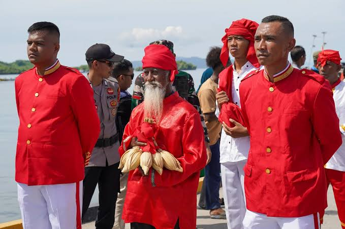
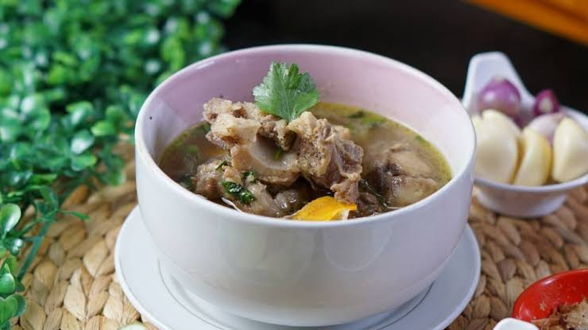

Jelajahi Kekayaan Budaya
Setiap daerah di Sulawesi Tengah memiliki budaya dan tradisi yang berbada. Keberagaman ini dapat dilihat dari adat istiadat, tarian, pakaian, dan makanan khas.
Lihat Semua Galeri
Rumah Adat
Tari Tradisional
Pakaian Adat

Alat Musik

Upacara Adat

Makanan dan Minuman Khas